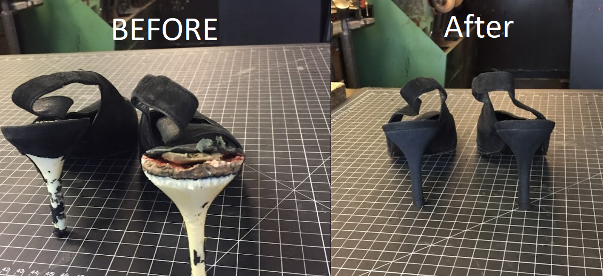

Izet's Leather & Shoe Repair is a family-run cobbler shop at 60 Atlantic Street in downtown Stamford, the kind of place with a hand-lettered sign, a workbench full of tools, and shelves lined with leather goods waiting for a second life. It's named for its founder, Izet — the craftsman behind the counter who reviewers describe as "a true craftsman and artist," known for turning beat-up shoes and bags into pieces that look new again.
The shop specializes in full sole and heel replacement, leather repair and restoration, and designer footwear restoration — everything from resoling a favorite pair of work boots to bringing a pair of Louboutins or a well-worn leather handbag back from the brink. Belts, gloves, luggage, and other leather accessories come through the shop too, all repaired the same way: by hand, with real leather and real craftsmanship, not a quick synthetic patch.
What keeps customers coming back, based on the shop's own reviews, is consistency: honest work, fair turnaround, and a level of hand craftsmanship that's increasingly rare in a disposable-shoe world. Izet's holds a 4.5-star rating across 61 reviews on Yelp — the kind of track record built one careful repair at a time, not with a marketing budget.

A real before-and-after from Izet's own portfolio — heel caps and soles rebuilt from the ground up.